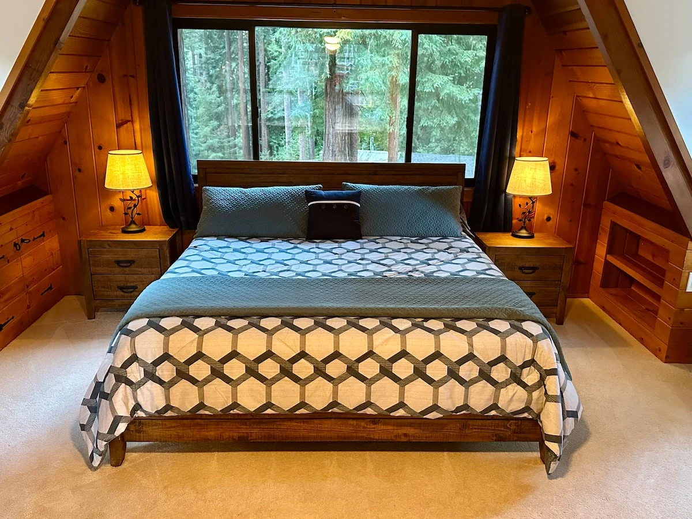
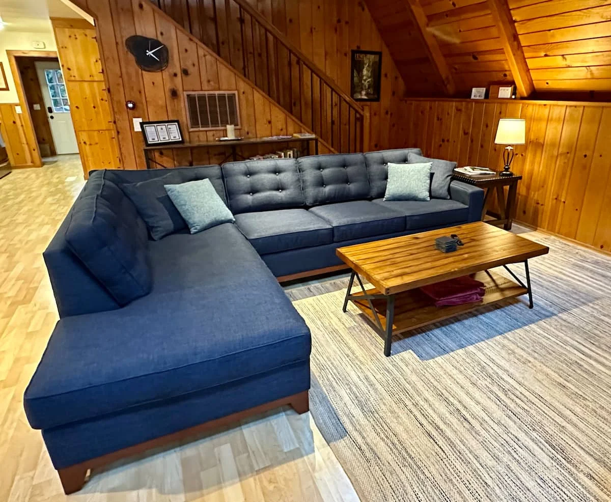
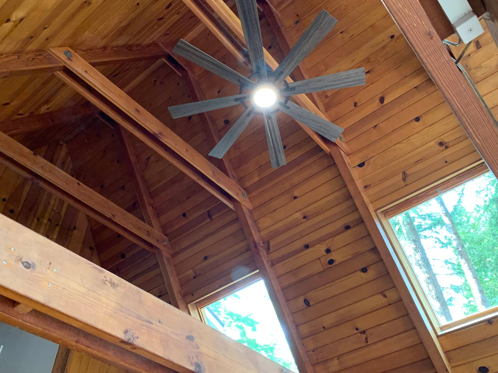
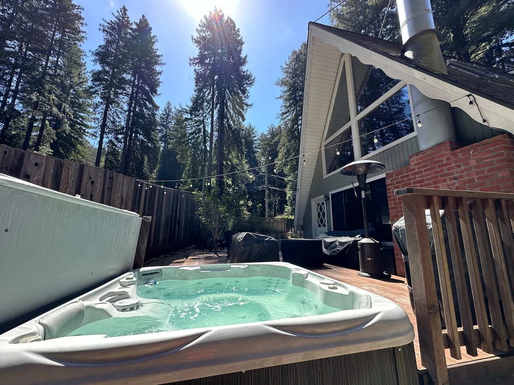
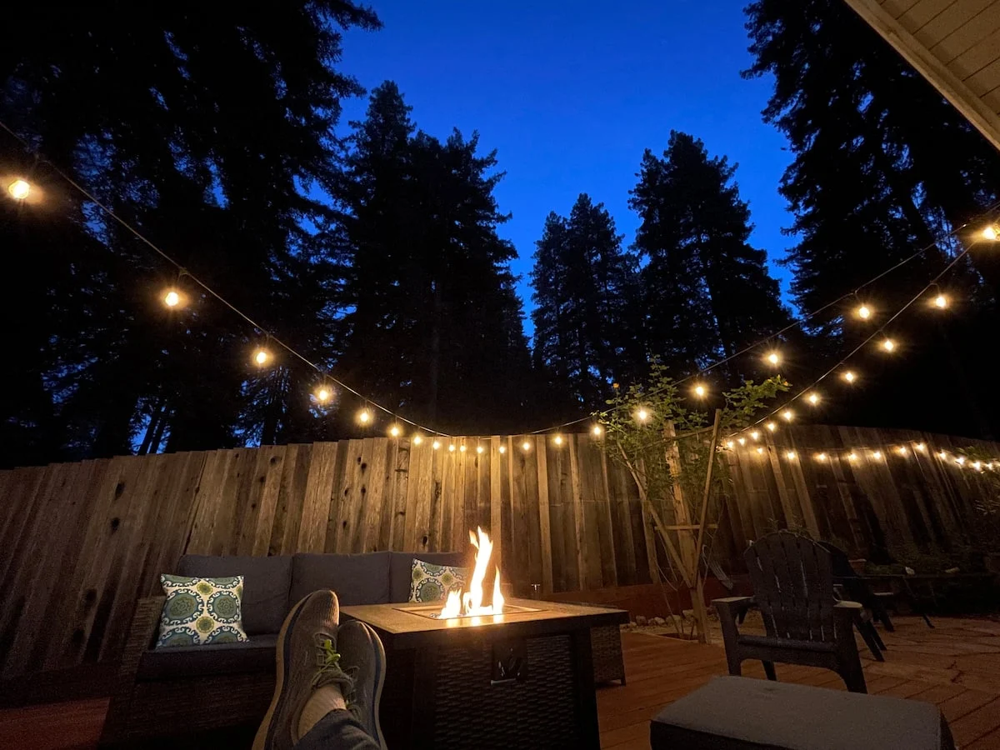
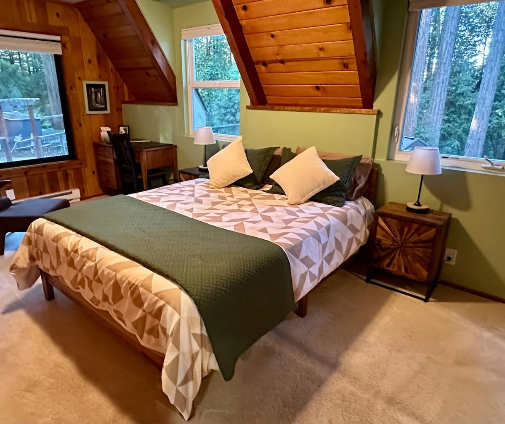
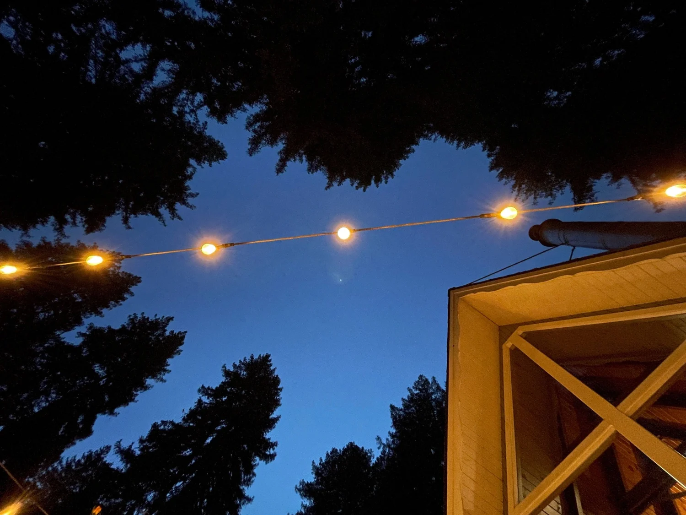

01 / UPSTAIRS
Wake up in the treetops.
A king bed, sitting area, and private bathroom with shower. This loft-style bedroom is open to the living room below.
Your home base for relaxation and adventures in the Santa Cruz Mountains and along the Pacific Coastline.
Book now on Airbnb ↗Join host Charlie Boots for a visit to Redwood Skye on The Destination Channel’s Staycation.
Some places make it easy to settle in. Built in 1963 in Felton’s historic Forest Lakes neighborhood, Redwood Skye brings together the warmth of a mid-century cabin and the comforts of a well-considered home.
Gather around a coastal-redwood dining table by Christensen Custom Tables. Enjoy artwork by Carol L. Riddle and G. Joy, and an antique dresser by Krista Nicholas. Open a book beneath the soaring wooden ceiling, or step outside and let the forest set the pace.
See the listing & guest reviews ↗



The deck is made for unhurried afternoons and evenings that linger. Soak in the built-in hot tub, cook dinner on the Weber grill, and pull up a seat around the fire pit.
Beyond the deck, a private garden offers space for cornhole, giant Jenga, and a little stargazing through the opening in the trees.
Two bedrooms, two bathrooms, and a queen sleeper sofa in the living room. Space for up to six guests.

A king bed, sitting area, and private bathroom with shower. This loft-style bedroom is open to the living room below.

A queen bed, small desk, and sitting chair, with access to the adjoining bathroom’s separate shower and bathtub.
A fully equipped galley kitchen, high-speed Wi-Fi, a workspace, Smart TV, books and games, a wood-burning fireplace, and an in-home washer and dryer make it easy to settle in.
Outside, enjoy free parking and paid Level 2 EV charging through OK2Charge. See our PlugShare listing for charger details, and Airbnb for the full amenities list.
Spend the morning among ancient redwoods and the afternoon by the ocean. Or keep it local, with a good meal and live music in Felton.

Explore the old-growth redwoods at Henry Cowell Redwoods State Park and the trails around Forest Lakes. For a different view of the forest, try a zipline tour at Mount Hermon Adventures.
Ride a steam train at Roaring Camp, browse town, or catch a show at Felton Music Hall. Head north to Loch Lomond for lakeside trails and fishing during its open season.
Head to Santa Cruz for beaches, the Boardwalk, and a little salt air. Explore the coastal trails and mountain biking at Wilder Ranch State Park, then return to your own quiet corner of the mountains.
Forest Lakes · Felton · Santa Cruz Mountains
Exact address provided with your Airbnb reservation.
Little details. Big trees. A place that feels like getting away.
“This was the perfect getaway.”
“Great cabin in an epic location.”
“a peaceful retreat in a beautiful setting.”
Check current availability, pricing, minimum stays, cancellation terms, and house rules on our Airbnb listing. Reservations are handled there so the calendar stays up to date.
Check-in is after 4 PM, and check-out is before 11 AM. A smart lock makes self check-in simple; arrival details are provided before your stay.
There is a loft-style king bedroom upstairs, a queen bedroom downstairs, and a queen sleeper sofa in the living room. The upstairs bedroom has a private bathroom and is open to the living room’s A-frame ceiling.
Yes. A paid Level 2 charger is available through OK2Charge. Scan the charger’s QR code to pay on your phone. A J1772-to-NACS adapter is available for compatible vehicles. See our PlugShare listing for details.
The cabin has central heating and ceiling fans. There is no central air conditioning; a portable A/C unit is available in the upstairs bedroom.
The Airbnb listing has the full rules, amenities, and safety disclosures, including exterior security cameras, an ungated hot tub, and areas with unprotected heights. Please review them before booking, particularly when traveling with children.
A weekend away. A few days to explore. A chance to do a little less. Find your dates and make Redwood Skye your home in the mountains.
Check availability on Airbnb ↗Have a question? Message Carsten ↗